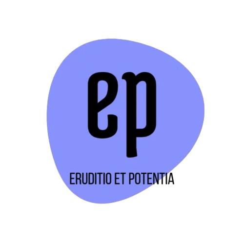

Evidence-informed adult pedagogy
Andragogy, transformative and experiential learning, put to work in real workshops and courses.
I study how adults learn in a postdigital world, and design tools that help them do it well: from peer mentorship for digital competence to a Socratically scaffolded Personal AI Mentor.
I'm a Learning Experience Designer (LXD) and independent researcher working where adult education meets technology: digital and AI literacy, and science and health communication.
I hold an MSc in Digital Health (Tallinn University of Technology) and an MSc in Education, Learning and Digitalization (Jönköping University), and I'm a certified adult educator (EQF Level 5). I'm currently studying for a BA in Chinese at Dalarna University, because I try to practise what I research. This semester I also volunteer as an online mentor with Paper Airplanes, supporting learners affected by conflict.
Before research, I spent over five years coordinating container-shipping operations across Europe and West Africa. It taught me that most problems are communication problems, and that a clear procedure is a gift to the next person.

Three connected threads, all asking the same question: how do adults build the competence and confidence to learn with technology, rather than just alongside it?
Andragogy, transformative and experiential learning, put to work in real workshops and courses.
How mentoring, human and AI-supported, builds lasting professional digital competence.
Translating complex science for the public and studying how clinicians adopt digital tools.
Its purpose is to support the learner's own reflective inquiry into a real task or problem they choose.
Built from my peer-reviewed conceptual architecture, it integrates andragogy, transformative learning, Socratic questioning, experiential learning and social sustainability on a Deweyan pragmatist base.
The mentor never grades learners, and it knows when a question belongs with a person rather than a machine.
Full, up-to-date record on ORCID 0009-0008-9306-7058.
I've designed and run both quantitative and qualitative research, often combined in mixed-methods studies. My epistemological stance is pragmatist, following Dewey: knowledge is made through interaction with data, participants and collaborators.
Feedback after my online workshops for medical writers on digital tools, research skills and science communication.
with Paper Airplanes · featured in UNESCO's LitBase of effective literacy practices
Paper Airplanes is a nonprofit that offers people affected by conflict free online tuition in languages and professional skills, with each learner paired one-on-one with a trained volunteer. I mentor in two of its programmes.
Practising what I research: peer-to-peer mentorship, supported by digital tools and grounded in andragogy.
The programme's materials are a skeleton, so I build on them. I design additional teaching and learning materials and align each with the Intended Learning Outcomes (ILOs), using Bloom's taxonomy to pitch activities at the right level. Lessons run as interactive Google Docs, following andragogy principles.
…I really enjoy having lessons with you, and I feel that I am making good progress in my English.English Program mentee, Sudan
Sessions start from the mentee's own experience, move through reflection and new concepts, and end in practice: mock interviews, presentation skills and scholarship applications. Practice is anchored in concrete frameworks, such as the elevator pitch for self-presentation and the STAR method for behavioural interview questions.
I found our discussion very helpful, particularly your advice on leading with my strongest fit and supporting it with measurable achievements… I'm also looking forward to practicing interview skills and strategies with you. Thank you again for your time and continued support.Professional Skills mentee, Syria
Ten years across commercial logistics, health technology, medical writing and adult education, always with a thread of mentoring and making complex systems usable.
The tools I rely on most. I keep learning new ones, building them into my workflow and introducing them to my students and mentees.
An experienced user. At Carebit Health, an electronic health record company, I managed product backlogs and team workflows in Notion. I built my e-portfolio for the Adult Educator exam in it, run my research and studies there, and designed the My AI Mentor template for learners.
I mentored medical writers in using Docs and Sheets well, including for collaborative writing, and my Paper Airplanes lessons run as interactive Google Docs. I've used Google Forms in my research and Google Analytics for SEO work.
What I use regularly to prepare and deliver workshops and teaching sessions, alongside Mentimeter and Padlet for interaction. I use them in my own university studies too.
My reference manager for research, and one I taught the medical writers I mentored to use.
Open to research collaborations, doctoral research positions, workshops and conversations about AI in education.